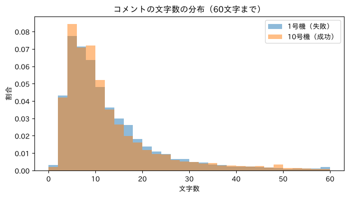
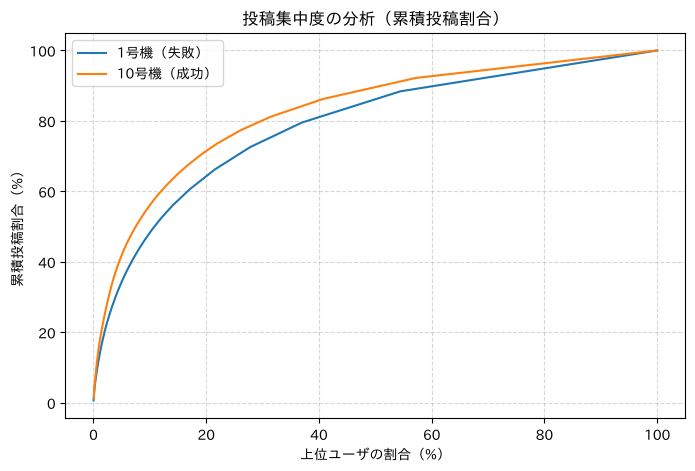
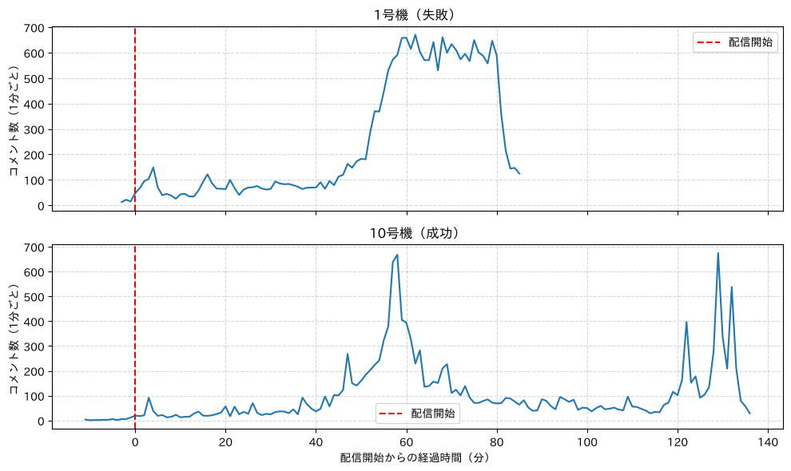
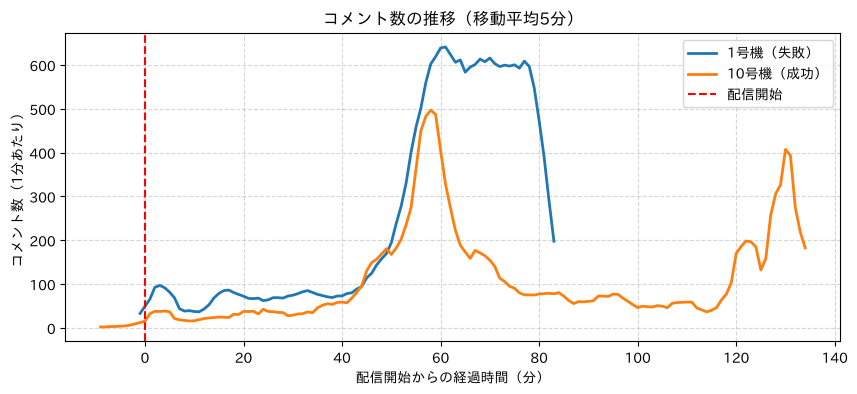
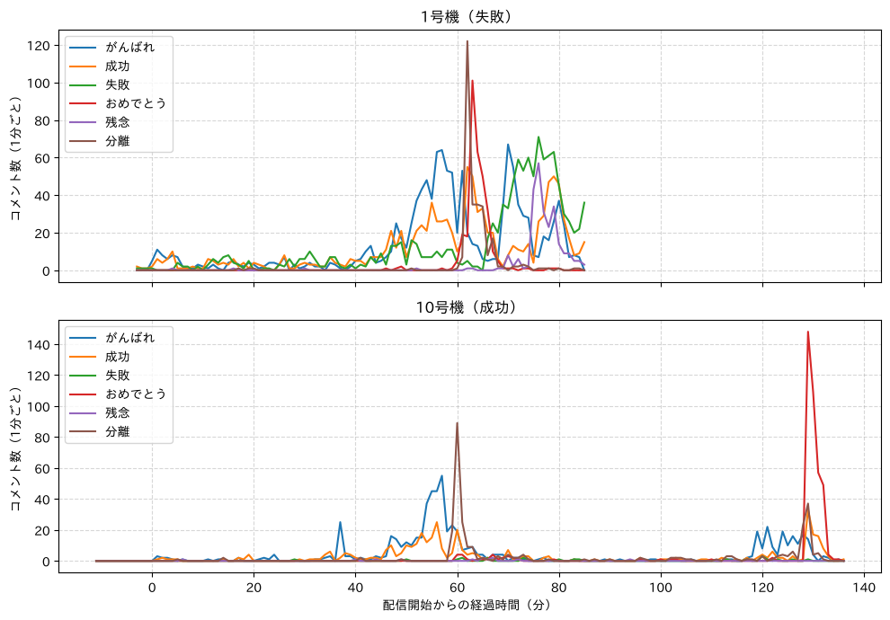
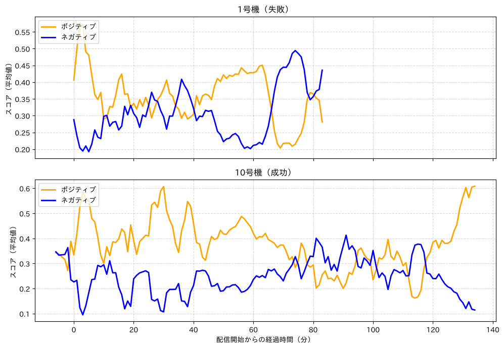
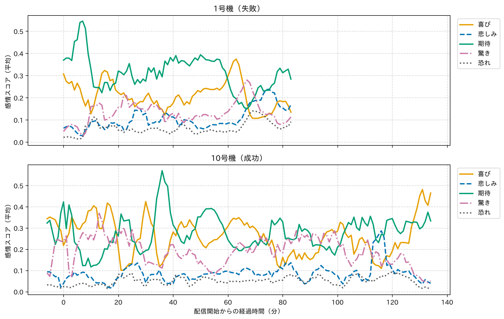

8. ソーシャルメディアデータの分析#
今回のゴール
ソーシャルメディアデータの特徴と分析の意義を理解する
YouTubeのライブチャットのデータを分析し、人々の意見・感情の動きを観察する
2つのライブを比較し、出来事の違いがコメントや感情にどう表れるかを考察する
演習での実データ分析を通して、時系列分析の理解・応用力、結果を考察する力を身につける
Important
このページの後半（感情の分析）では GPU を使う。
途中でランタイムのタイプを変更すると、それまでにインストールしたライブラリやアップロードしたファイルが消えてしまうため、作業を始める前に ランタイムのタイプを GPU に変更しておく。
（ランタイム → ランタイムのタイプを変更 → T4 GPU など）
8.1. 分析対象：H3ロケットの打ち上げライブ#
JAXAのH3ロケットの打ち上げを中継したYouTubeライブのチャット（コメント）を分析する。
結果が「失敗」と「成功」の2つのライブを比較する。
1号機（試験機1号機） |
10号機 |
|
|---|---|---|
打ち上げ日時 |
2023年3月7日 10:37:55 |
2026年10月20日 4:41:03 |
打ち上げのタイミング |
配信開始から約60分後 |
配信開始から約58分後 |
搭載物 |
先進光学衛星「だいち3号」 |
火星衛星探査機「MMX」 |
結果 |
失敗（第2段エンジンが着火せず、指令破壊） |
成功（打ち上げ約70分後にMMXを分離） |
動画ID |
y2V9ZSlNCPU |
sZGyK9jfoy4 |
データ |
|
|
データの列
列名 |
内容 |
|---|---|
datetime |
投稿日時 |
elapsedTime |
配信開始からの経過時間（配信開始前の投稿はマイナス） |
author |
投稿者（名前はIDに置き換え済み） |
message |
コメント |
amountString |
スーパーチャットの金額（あれば） |
Note
時系列分析では、elapsedTime（配信開始からの経過時間）を横軸にする。
どちらのライブも、打ち上げは配信開始から約1時間後である。
8.2. データの確認#
データはWebClassを参照
8.2.1. データの中身を確認#
2つのCSVファイルを Google Colab に配置
データ読み込み
プログラム
import pandas as pd
# 1号機（失敗）
df1 = pd.read_csv("youtube_livechat-y2V9ZSlNCPU.csv", encoding="utf-8-sig", parse_dates=["datetime"])
# 10号機（成功）
df10 = pd.read_csv("youtube_livechat-sZGyK9jfoy4.csv", encoding="utf-8-sig", parse_dates=["datetime"])
df1.head(10)
出力
datetime |
elapsedTime |
author |
message |
amountString |
|---|---|---|---|---|
2023-03-07 09:35:03 |
-2:51 |
1 |
まもなく ｌｉｖｅ5分前 |
nan |
2023-03-07 09:35:05 |
-2:49 |
2 |
待機！ |
nan |
2023-03-07 09:35:09 |
-2:45 |
3 |
打ち上げ中止は、無いな二号機が待機待ちですから！ |
nan |
2023-03-07 09:35:09 |
-2:45 |
4 |
これ、成功したら、日本経済の救世主になるよ! |
nan |
2023-03-07 09:35:14 |
-2:40 |
5 |
楽しみ！ |
nan |
2023-03-07 09:35:18 |
-2:36 |
6 |
成功を信じるけど、たとえ失敗したとしても、 |
nan |
2023-03-07 09:35:20 |
-2:34 |
5 |
そうですね |
nan |
2023-03-07 09:35:20 |
-2:34 |
7 |
身体中、ゾワゾワする |
nan |
2023-03-07 09:35:27 |
-2:27 |
8 |
初代だいち含めたこの国に必要な衛星の打ち上げですし。確実に打ち上げ出来ることが第一 |
nan |
2023-03-07 09:35:30 |
-2:24 |
5 |
次がある |
nan |
8.2.2. データの傾向を確認： コメント件数・文字数（2つのライブの比較）#
プログラム
import pandas as pd
FILES = {
"1号機（失敗）": "youtube_livechat-y2V9ZSlNCPU.csv",
"10号機（成功）": "youtube_livechat-sZGyK9jfoy4.csv",
}
rows = []
for name, file in FILES.items():
df = pd.read_csv(file, encoding="utf-8-sig", parse_dates=["datetime"])
df["コメント文字数"] = df["message"].str.len()
rows.append({
"ライブ": name,
"コメント件数": len(df),
"投稿者数": df["author"].nunique(),
"配信時間（分）": round((df["datetime"].max() - df["datetime"].min()).total_seconds() / 60),
"文字数（平均）": round(df["コメント文字数"].mean(), 1),
"文字数（中央値）": df["コメント文字数"].median(),
"文字数（最大）": df["コメント文字数"].max(),
})
df_stats = pd.DataFrame(rows)
df_stats
出力
ライブ |
コメント件数 |
投稿者数 |
配信時間（分） |
文字数（平均） |
文字数（中央値） |
文字数（最大） |
|---|---|---|---|---|---|---|
1号機（失敗） |
21861 |
5567 |
89 |
16.2 |
10 |
895 |
10号機（成功） |
15289 |
2787 |
148 |
15.4 |
9 |
456 |
1号機は約90分の配信に約2.2万件、10号機は約150分の配信に約1.5万件のコメントがある
1分あたりのコメント数は、1号機の方が多い
8.2.3. データの傾向を確認： コメント文字数の分布#
プログラム
!pip -q install japanize_matplotlib
import pandas as pd
import matplotlib.pyplot as plt
import japanize_matplotlib
FILES = {
"1号機（失敗）": "youtube_livechat-y2V9ZSlNCPU.csv",
"10号機（成功）": "youtube_livechat-sZGyK9jfoy4.csv",
}
plt.figure(figsize=(8, 4))
for name, file in FILES.items():
df = pd.read_csv(file, encoding="utf-8-sig")
df["コメント文字数"] = df["message"].str.len()
# 件数が異なるため、割合（density=True）で比較する
plt.hist(df["コメント文字数"], bins=range(0, 61, 2), alpha=0.5, density=True, label=name)
plt.title("コメントの文字数の分布（60文字まで）")
plt.xlabel("文字数")
plt.ylabel("割合")
plt.legend()
plt.show()
出力

どちらも10文字前後の短いコメントが中心
8.3. チャットの内容分析#
8.3.1. 語の出現頻度（2つのライブの比較）#
Note
形態素解析は時間がかかるため、授業では 全体の10%をサンプリング して実行する（df.sample(frac=0.1, random_state=42)）。
全件で実行する場合は、サンプリングの行をコメントアウトする（数分〜10分程度かかる）。
プログラム
!pip -q install spacy ginza ja-ginza
import re
import spacy
import pandas as pd
from collections import Counter
from tqdm.auto import tqdm
nlp = spacy.load("ja_ginza")
FILES = {
"1号機（失敗）": "youtube_livechat-y2V9ZSlNCPU.csv",
"10号機（成功）": "youtube_livechat-sZGyK9jfoy4.csv",
}
# 名詞・固有名詞・形容詞
target_pos = ("NOUN", "PROPN", "ADJ")
# ストップワード
stop_words = ["\n", "お", "さん", "こと", "ない", "分", "年", "後", "第", "人", "H", "W", "w"]
top_words = {}
for name, file in FILES.items():
df = pd.read_csv(file, encoding="utf-8-sig")
# サンプリング
df = df.sample(frac=0.1, random_state=42) # 全体の10%
all_terms = []
for text in tqdm(df["message"].dropna(), desc=name):
# 絵文字（:rocket: のような表記）を除去
text = re.sub(r":[^:\s]+:", " ", text)
try:
doc = nlp(text)
for token in doc:
if token.pos_ in target_pos and token.lemma_.strip() != "" and token.lemma_ not in stop_words:
all_terms.append(token.lemma_)
except:
continue
counter = Counter(all_terms)
top_words[name] = counter.most_common(20)
# 2つのライブの上位語を並べて表示
rows = []
for i in range(20):
row = {"順位": i + 1}
for name in FILES:
word, cnt = top_words[name][i]
row[name] = f"{word}（{cnt}）"
rows.append(row)
df_top = pd.DataFrame(rows)
df_top
出力
順位 |
1号機（失敗） |
10号機（成功） |
|---|---|---|
1 |
失敗（110） |
火星（44） |
2 |
日本（66） |
mmx（42） |
3 |
成功（64） |
分離（26） |
4 |
共同（63） |
いい（25） |
5 |
次（56） |
すごい（23） |
6 |
ロケット（45） |
Go（23） |
7 |
通信（43） |
宇宙（21） |
8 |
速度（33） |
成功（20） |
9 |
段（32） |
あと（19） |
10 |
エンジン（31） |
おおお（17） |
11 |
いい（29） |
地球（16） |
12 |
残念（29） |
順調（16） |
13 |
JAXA（26） |
エンジン（15） |
14 |
おおお（24） |
フォボス（14） |
15 |
目（22） |
無事（13） |
16 |
お疲れ様（22） |
旅（12） |
17 |
大丈夫（22） |
時間（11） |
18 |
打ち上げる（20） |
けー（11） |
19 |
宇宙（20） |
キロ（10） |
20 |
けー（20） |
てらっしゃる（9） |
1号機は「失敗」「次」「残念」「大丈夫」など、結果を受けた語が上位に来る
10号機は「火星」「MMX」「すごい」「順調」「無事」など、期待や安心の語が上位に来る
「共同」「通信」は、共同通信の記者による記者会見での質問（前回の打ち上げ中止を「失敗」と呼んだ件）を話題にしたコメント。固有名詞「共同通信」が2語に分かれてしまっている（前回学んだ固有名詞の辞書登録で対応できる）
Note
YouTubeの絵文字は :rocket: のような文字列でデータに入っている。
そのまま解析すると「rocket」などが上位に来るため、正規表現 :[^:\s]+: で除去している。
8.3.2. ワードクラウド（2つのライブの比較）#
プログラム
!apt-get -q -y install fonts-ipaexfont
!pip -q install japanize_matplotlib
# ワードクラウド
import re
import spacy
import pandas as pd
import matplotlib.pyplot as plt
import japanize_matplotlib
from collections import Counter
from wordcloud import WordCloud
from tqdm.auto import tqdm
nlp = spacy.load("ja_ginza")
FILES = {
"1号機（失敗）": "youtube_livechat-y2V9ZSlNCPU.csv",
"10号機（成功）": "youtube_livechat-sZGyK9jfoy4.csv",
}
# 名詞・固有名詞・形容詞
target_pos = ("NOUN", "PROPN", "ADJ")
# ストップワード
stop_words = ["\n", "お", "さん", "こと", "ない", "分", "年", "後", "第", "人", "H", "W", "w"]
jp_font_path = "/usr/share/fonts/opentype/ipaexfont-gothic/ipaexg.ttf"
for name, file in FILES.items():
df = pd.read_csv(file, encoding="utf-8-sig")
# サンプリング
df = df.sample(frac=0.1, random_state=42) # 全体の10%
all_terms = []
for text in tqdm(df["message"].dropna(), desc=name):
# 改行文字を除去（ワードクラウドでは改行文字はエラーとなるため）
text = "".join(text.splitlines())
# 絵文字（:rocket: のような表記）を除去
text = re.sub(r":[^:\s]+:", " ", text)
try:
doc = nlp(text)
for token in doc:
if token.pos_ in target_pos and token.lemma_.strip() != "" and token.lemma_ not in stop_words:
all_terms.append(token.lemma_)
except:
pass
# 頻度を集計
counter = Counter(all_terms)
freq_dict = {}
for term, cnt in counter.items():
freq_dict[term] = cnt
# WordCloud の生成
wc = WordCloud(
width=800,
height=400,
background_color="white",
font_path=jp_font_path,
random_state=0
)
wc = wc.generate_from_frequencies(freq_dict)
# 表示
plt.figure(figsize=(10, 5))
plt.imshow(wc, interpolation="bilinear")
plt.title(name)
plt.axis("off")
plt.tight_layout()
plt.show()
出力
8.3.3. 特定語の出現頻度#
プログラム
import pandas as pd
FILES = {
"1号機（失敗）": "youtube_livechat-y2V9ZSlNCPU.csv",
"10号機（成功）": "youtube_livechat-sZGyK9jfoy4.csv",
}
keywords = ["成功", "失敗", "おめでとう", "残念", "頑張れ", "がんばれ", "分離"]
rows = []
for key in keywords:
row = {"キーワード": key}
for name, file in FILES.items():
df = pd.read_csv(file, encoding="utf-8-sig")
df_kw = df[df["message"].str.contains(key, na=False)]
row[name] = len(df_kw)
rows.append(row)
df_count = pd.DataFrame(rows)
df_count
出力
キーワード |
1号機（失敗） |
10号機（成功） |
|---|---|---|
成功 |
1031 |
374 |
失敗 |
1202 |
23 |
おめでとう |
317 |
402 |
残念 |
260 |
12 |
頑張れ |
464 |
205 |
がんばれ |
716 |
412 |
分離 |
282 |
294 |
8.3.3.1. ⚠ 単純なキーワード指定を用いた一致による問題点#
「失敗」を含んだ投稿の抽出（1号機）
「失敗ではない」「失敗じゃない」「失敗とは言わない」のように、逆の意味の投稿も一致してしまう
プログラム（「失敗」を含む投稿のうち、否定の表現を含むものを表示）
import pandas as pd
df = pd.read_csv("youtube_livechat-y2V9ZSlNCPU.csv", encoding="utf-8-sig") # 1号機（失敗）
df_kw = df[df["message"].str.contains("失敗", na=False)]
# 「失敗」を含む投稿のうち、否定の表現（失敗ではない、失敗じゃない など）を含むもの
df_kw[df_kw["message"].str.contains("失敗じゃな|失敗ではな|失敗では無|失敗とは言わ", na=False)][["elapsedTime", "message"]].head(8)
出力
elapsedTime |
message |
|---|---|
6:58 |
共同よく聞け、ロケットが地上から離れなければ失敗とは言わない。わかったか！ |
11:17 |
前回は不具合の理由がわかったので失敗ではない |
12:27 |
成功して欲しいのは当たり前だけれど、失敗を失敗じゃないって言うのはみっともない |
12:39 |
前回は失敗じゃないし！ |
13:54 |
異常検知する状態だったこと自体が失敗なんだし、中止だから失敗じゃないは通らないねｗ |
14:39 |
異常を検知して、安全に停止したのだから、ちゃんとフェールセーフが働いたということ。失敗では無い |
14:42 |
失敗じゃないと言い張るバカがいるから失敗だって言い続けなければならないｗ |
15:28 |
中止したのは正解だったけれど失敗じゃないわけじゃないんよｗ |
1号機の打ち上げの前に起きた「打ち上げ中止は失敗か」という議論（記者会見での共同通信の記者の質問）をめぐって、「失敗ではない」という投稿が多く見られる
8.3.3.2. 改善方法：正規表現を用いた判定#
(?!じゃな|ではな|では無|とは言わ)：直後に否定の表現が続かない（否定の先読み）
プログラム
import pandas as pd
df = pd.read_csv("youtube_livechat-y2V9ZSlNCPU.csv", encoding="utf-8-sig") # 1号機（失敗）
# 単純な一致
df_simple = df[df["message"].str.contains("失敗", na=False)]
# 正規表現：直後に否定の表現が続く「失敗」を除外（否定の先読み）
df_re = df[df["message"].str.contains(r"失敗(?!じゃな|ではな|では無|とは言わ)", na=False, regex=True)]
print(f"単純な一致：{len(df_simple)} 件")
print(f"正規表現 ：{len(df_re)} 件")
出力
単純な一致：1202 件
正規表現 ：1133 件
Note
正規表現で除外しても、意味を正しく判定できるとは限らない。
例えば「失敗じゃないわけじゃない」（二重否定）や「失敗じゃないと言い張る人がいる」は、実際には「失敗」と考えている投稿だが、除外されてしまう。
キーワードの出現回数だけでは、投稿者の意見の向き（賛成・反対など）までは分からない点に注意する。
8.3.4. 特定語の出現頻度（改良版）#
表記ゆれ（頑張れ／がんばれ／ガンバレ）は
|（または）でまとめる「失敗」は、否定の表現を除外したパターンを使う
コメント件数が異なるため、1000件あたりの件数 でも比較する
プログラム
import pandas as pd
FILES = {
"1号機（失敗）": "youtube_livechat-y2V9ZSlNCPU.csv",
"10号機（成功）": "youtube_livechat-sZGyK9jfoy4.csv",
}
# キーワードと検索パターン（正規表現）
patterns = {
"成功": "成功",
"失敗": r"失敗(?!じゃな|ではな|では無|とは言わ)", # 「失敗ではない」などを除外
"おめでとう": "おめでとう",
"残念": "残念",
"がんばれ": r"頑張れ|がんばれ|ガンバレ", # 表記ゆれをまとめる
"分離": "分離",
}
rows = []
for key, pattern in patterns.items():
row = {"キーワード": key}
for name, file in FILES.items():
df = pd.read_csv(file, encoding="utf-8-sig")
df_kw = df[df["message"].str.contains(pattern, na=False, regex=True)]
# コメント件数が異なるため、1000件あたりの件数も求める
row[name] = len(df_kw)
row[name + " 1000件あたり"] = round(len(df_kw) / len(df) * 1000, 1)
rows.append(row)
df_count = pd.DataFrame(rows)
df_count
出力
キーワード |
1号機（失敗） |
1号機（失敗） 1000件あたり |
10号機（成功） |
10号機（成功） 1000件あたり |
|---|---|---|---|---|
成功 |
1031 |
47.2 |
374 |
24.5 |
失敗 |
1133 |
51.8 |
22 |
1.4 |
おめでとう |
317 |
14.5 |
402 |
26.3 |
残念 |
260 |
11.9 |
12 |
0.8 |
がんばれ |
1211 |
55.4 |
632 |
41.3 |
分離 |
282 |
12.9 |
294 |
19.2 |
「失敗」「残念」は1号機で圧倒的に多い
「成功」は1号機の方が多い。「成功してほしい」「失敗は成功のもと」など、願いや励ましにも使われるため
「おめでとう」は10号機が多いが、1号機にも一定数ある（打ち上げ直後に、成功したと思って投稿されたもの → 時系列分析で確認）
8.3.5. 特定語を含んだ投稿のワードクラウド#
プログラム
!apt-get -q -y install fonts-ipaexfont
!pip -q install japanize_matplotlib
# ワードクラウド
import re
import spacy
import pandas as pd
import matplotlib.pyplot as plt
import japanize_matplotlib
from collections import Counter
from wordcloud import WordCloud
from tqdm.auto import tqdm
nlp = spacy.load("ja_ginza")
df = pd.read_csv("youtube_livechat-y2V9ZSlNCPU.csv", encoding="utf-8-sig") # 1号機（失敗）
keyword = "失敗"
df = df[df["message"].str.contains(keyword, na=False)]
# サンプリング
df = df.sample(frac=0.1, random_state=42) # 全体の10%
# 名詞・固有名詞・形容詞
target_pos = ("NOUN", "PROPN", "ADJ")
# ストップワード（キーワード自身も除外）
stop_words = ["\n", "お", "さん", "こと", "ない", "分", "年", "後", "第", "人", "H", "W", "w", keyword]
all_terms = []
for text in tqdm(df["message"]):
text = "".join(text.splitlines())
text = re.sub(r":[^:\s]+:", " ", text)
try:
doc = nlp(text)
for token in doc:
if token.pos_ in target_pos and token.lemma_.strip() != "" and token.lemma_ not in stop_words:
all_terms.append(token.lemma_)
except:
pass
counter = Counter(all_terms)
freq_dict = {}
for term, cnt in counter.items():
freq_dict[term] = cnt
jp_font_path = "/usr/share/fonts/opentype/ipaexfont-gothic/ipaexg.ttf"
wc = WordCloud(
width=800,
height=400,
background_color="white",
font_path=jp_font_path,
random_state=0
)
wc = wc.generate_from_frequencies(freq_dict)
plt.figure(figsize=(10, 5))
plt.imshow(wc, interpolation="bilinear")
plt.title(f"「{keyword}」を含むコメント（1号機）")
plt.axis("off")
plt.tight_layout()
plt.show()
出力
「失敗」を含むコメントには「共同」「通信」「記者」「中止」「次」「成功」「母」（失敗は成功の母）などが見られる
8.4. ユーザ分析#
8.4.1. 一人あたりの投稿件数の分析#
プログラム
import pandas as pd
FILES = {
"1号機（失敗）": "youtube_livechat-y2V9ZSlNCPU.csv",
"10号機（成功）": "youtube_livechat-sZGyK9jfoy4.csv",
}
rows = []
for name, file in FILES.items():
df = pd.read_csv(file, encoding="utf-8-sig")
# 各ユーザの投稿数をカウント
author_counts = df["author"].value_counts()
rows.append({
"ライブ": name,
"投稿者数": len(author_counts),
"1人あたり投稿数（平均）": round(author_counts.mean(), 1),
"1人あたり投稿数（中央値）": author_counts.median(),
"1回だけ投稿した人の割合（%）": round((author_counts == 1).sum() / len(author_counts) * 100, 1),
"最多投稿者の投稿数": author_counts.max(),
})
df_users = pd.DataFrame(rows)
df_users
出力
ライブ |
投稿者数 |
1人あたり投稿数（平均） |
1人あたり投稿数（中央値） |
1回だけ投稿した人の割合（%） |
最多投稿者の投稿数 |
|---|---|---|---|---|---|
1号機（失敗） |
5567 |
3.9 |
2 |
45.7 |
144 |
10号機（成功） |
2787 |
5.5 |
2 |
43 |
189 |
8.4.2. 投稿数の偏り#
プログラム
import pandas as pd
import matplotlib.pyplot as plt
import japanize_matplotlib
FILES = {
"1号機（失敗）": "youtube_livechat-y2V9ZSlNCPU.csv",
"10号機（成功）": "youtube_livechat-sZGyK9jfoy4.csv",
}
plt.figure(figsize=(8, 5))
for name, file in FILES.items():
df = pd.read_csv(file, encoding="utf-8-sig")
# 投稿数を降順に並べ替え
counts_sorted = df["author"].value_counts().sort_values(ascending=False)
# 累積投稿割合（%）
cum_ratio = counts_sorted.cumsum() / counts_sorted.sum() * 100
# 投稿者数が異なるため、横軸は「上位何%のユーザか」にする
user_ratio = []
for i in range(1, len(cum_ratio) + 1):
user_ratio.append(i / len(cum_ratio) * 100)
plt.plot(user_ratio, cum_ratio.values, label=name)
plt.title("投稿集中度の分析（累積投稿割合）")
plt.xlabel("上位ユーザの割合（%）")
plt.ylabel("累積投稿割合（%）")
plt.legend()
plt.grid(True, linestyle="--", alpha=0.5)
plt.show()
出力

上位10%のユーザの投稿が、1号機では全体の約48%、10号機では約56%を占める
10号機の方が、少数のユーザに投稿が集中している
8.4.3. 語彙多様性の低いユーザの発見#
プログラム
import spacy
import pandas as pd
from tqdm.auto import tqdm
# 形態素解析モデル
nlp = spacy.load("ja_ginza")
FILES = {
"1号機（失敗）": "youtube_livechat-y2V9ZSlNCPU.csv",
"10号機（成功）": "youtube_livechat-sZGyK9jfoy4.csv",
}
for name, file in FILES.items():
df = pd.read_csv(file, encoding="utf-8-sig")
# サンプリング
df = df.sample(frac=0.1, random_state=42) # 全体の10%
# ユーザごとの語彙多様性を計算
records = []
for author, group in tqdm(df.groupby("author"), desc=name):
all_text = " ".join(group["message"].dropna().astype(str))
try:
doc = nlp(all_text)
tokens = []
for token in doc:
tokens.append(token.lemma_)
token数 = len(tokens)
type数 = len(set(tokens))
# 単語が無いユーザ（絵文字だけの投稿など）は除外
if token数 == 0:
continue
ttr = type数 / token数
records.append({
"author": author,
"コメント数": len(group),
"総単語数": token数,
"異なり語数": type数,
"TTR": round(ttr, 3)
})
except:
continue
# 結果をCSVに保存（例：youtube_livechat-y2V9ZSlNCPU-TTR.csv）
df_ttr = pd.DataFrame(records)
df_ttr.to_csv(file.replace(".csv", "-TTR.csv"), index=False, encoding="utf-8-sig")
コメント数が多く、かつTTRが低い（語彙多様性が低い）ユーザの投稿を確認
import pandas as pd
df_ttr = pd.read_csv("youtube_livechat-y2V9ZSlNCPU-TTR.csv", encoding="utf-8-sig") # 1号機（失敗）
# TTRの昇順に並び替え
df_ttr = df_ttr.sort_values("TTR", ascending=True)
# コメント数5件以上に限定し、上位10件を表示（サンプリングで件数が減るため5件以上とする）
df_ttr[df_ttr["コメント数"] >= 5].head(10)
出力
author |
コメント数 |
総単語数 |
異なり語数 |
TTR |
|---|---|---|---|---|
515 |
12 |
548 |
16 |
0.029 |
1257 |
11 |
311 |
59 |
0.19 |
1000 |
5 |
69 |
17 |
0.246 |
1261 |
11 |
76 |
19 |
0.25 |
97 |
6 |
31 |
8 |
0.258 |
250 |
6 |
255 |
68 |
0.267 |
905 |
5 |
25 |
7 |
0.28 |
287 |
5 |
134 |
40 |
0.299 |
4489 |
6 |
62 |
20 |
0.323 |
2107 |
7 |
40 |
18 |
0.45 |
指定したユーザ（author）のコメントを表示
df = pd.read_csv("youtube_livechat-y2V9ZSlNCPU.csv", encoding="utf-8-sig")
df[df["author"] == 515]
TTRが低いユーザは、同じ応援コメントや絵文字を何度も繰り返し投稿している（コピー＆ペーストの連投）
8.5. 時系列分析#
8.5.1. コメント数の推移#
elapsedTime（配信開始からの経過時間）を 分 に変換して横軸にするelapsedTimeは「時:分:秒」または「分:秒」の文字列で、配信開始前の投稿はマイナス（例：-10:41）になる
プログラム
import pandas as pd
import matplotlib.pyplot as plt
import japanize_matplotlib
FILES = {
"1号機（失敗）": "youtube_livechat-y2V9ZSlNCPU.csv",
"10号機（成功）": "youtube_livechat-sZGyK9jfoy4.csv",
}
# elapsedTime（配信開始からの経過時間）を分に変換
def to_minutes(t):
t = str(t)
sign = 1
if t.startswith("-"): # 配信開始前の投稿はマイナス（例：-10:41）
sign = -1
t = t[1:]
seconds = 0
for x in t.split(":"): # 「時:分:秒」または「分:秒」
seconds = seconds * 60 + int(x)
return (sign * seconds) // 60
fig, axes = plt.subplots(2, 1, figsize=(10, 6), sharex=True)
i = 0
for name, file in FILES.items():
df = pd.read_csv(file, encoding="utf-8-sig", parse_dates=["datetime"])
# 配信開始からの経過時間（分）
df["elapsed_min"] = df["elapsedTime"].apply(to_minutes)
# 1分ごとのコメント数
counts = df.groupby("elapsed_min").size().reset_index(name="count")
axes[i].plot(counts["elapsed_min"], counts["count"])
axes[i].axvline(0, color="red", linestyle="--", label="配信開始")
axes[i].set_title(name)
axes[i].set_ylabel("コメント数（1分ごと）")
axes[i].legend()
axes[i].grid(True, linestyle="--", alpha=0.5)
i = i + 1
axes[1].set_xlabel("配信開始からの経過時間（分）")
plt.tight_layout()
plt.show()
出力

8.5.2. コメント数の推移（移動平均で比較）#
プログラム
import pandas as pd
import matplotlib.pyplot as plt
import japanize_matplotlib
FILES = {
"1号機（失敗）": "youtube_livechat-y2V9ZSlNCPU.csv",
"10号機（成功）": "youtube_livechat-sZGyK9jfoy4.csv",
}
# elapsedTime（配信開始からの経過時間）を分に変換
def to_minutes(t):
t = str(t)
sign = 1
if t.startswith("-"): # 配信開始前の投稿はマイナス（例：-10:41）
sign = -1
t = t[1:]
seconds = 0
for x in t.split(":"): # 「時:分:秒」または「分:秒」
seconds = seconds * 60 + int(x)
return (sign * seconds) // 60
plt.figure(figsize=(10, 4))
for name, file in FILES.items():
df = pd.read_csv(file, encoding="utf-8-sig", parse_dates=["datetime"])
# 配信開始からの経過時間（分）
df["elapsed_min"] = df["elapsedTime"].apply(to_minutes)
counts = df.groupby("elapsed_min").size().reset_index(name="count")
# 移動平均（5分）
counts["smooth"] = counts["count"].rolling(window=5, center=True).mean()
plt.plot(counts["elapsed_min"], counts["smooth"], label=name, linewidth=2)
plt.axvline(0, color="red", linestyle="--", label="配信開始")
plt.title("コメント数の推移（移動平均5分）")
plt.xlabel("配信開始からの経過時間（分）")
plt.ylabel("コメント数（1分あたり）")
plt.legend()
plt.grid(True, linestyle="--", alpha=0.5)
plt.show()
出力

どちらも打ち上げの瞬間（配信開始から約1時間後）にコメントが急増する
10号機は打ち上げ後すぐに落ち着き、探査機の分離（配信開始から約130分後）で再び盛り上がる
1号機は打ち上げ後もコメントが多いまま続く（第2段エンジンが着火しない状況への不安・議論）
8.5.3. 盛り上がったシーン（特定語）#
プログラム
import pandas as pd
import matplotlib.pyplot as plt
import japanize_matplotlib
FILES = {
"1号機（失敗）": "youtube_livechat-y2V9ZSlNCPU.csv",
"10号機（成功）": "youtube_livechat-sZGyK9jfoy4.csv",
}
# elapsedTime（配信開始からの経過時間）を分に変換
def to_minutes(t):
t = str(t)
sign = 1
if t.startswith("-"): # 配信開始前の投稿はマイナス（例：-10:41）
sign = -1
t = t[1:]
seconds = 0
for x in t.split(":"): # 「時:分:秒」または「分:秒」
seconds = seconds * 60 + int(x)
return (sign * seconds) // 60
# キーワードと検索パターン（正規表現）
patterns = {
"がんばれ": r"頑張れ|がんばれ|ガンバレ",
"成功": "成功",
"失敗": r"失敗(?!じゃな|ではな|では無|とは言わ)",
"おめでとう": "おめでとう",
"残念": "残念",
"分離": "分離",
}
fig, axes = plt.subplots(2, 1, figsize=(10, 7), sharex=True)
i = 0
for name, file in FILES.items():
df = pd.read_csv(file, encoding="utf-8-sig", parse_dates=["datetime"])
# 配信開始からの経過時間（分）
df["elapsed_min"] = df["elapsedTime"].apply(to_minutes)
for key, pattern in patterns.items():
# キーワードを含むコメントを抽出し、1分ごとに集計
df_kw = df[df["message"].str.contains(pattern, na=False, regex=True)]
counts_kw = df_kw.groupby("elapsed_min").size()
# コメントが無い時間（分）を0件として補う
all_min = range(int(df["elapsed_min"].min()), int(df["elapsed_min"].max()) + 1)
counts_kw = counts_kw.reindex(all_min, fill_value=0)
axes[i].plot(counts_kw.index, counts_kw.values, label=key)
axes[i].set_title(name)
axes[i].set_ylabel("コメント数（1分ごと）")
axes[i].legend(loc="upper left")
axes[i].grid(True, linestyle="--", alpha=0.5)
i = i + 1
axes[1].set_xlabel("配信開始からの経過時間（分）")
plt.tight_layout()
plt.show()
出力

出来事 |
1号機（失敗） |
10号機（成功） |
|---|---|---|
打ち上げ直前 |
約55〜60分：「がんばれ」が急増 |
約53〜58分：「がんばれ」が急増 |
固体ロケットブースタの分離 |
約62分：「分離」が急増 |
約60分：「分離」が急増 |
打ち上げの数分後 |
約63分：「おめでとう」が増える（成功したと思った） |
― |
第2段エンジンの着火の時間帯 |
約70〜75分：再び「がんばれ」、続いて「失敗」が増える |
― |
指令破壊 |
約76分：「残念」「失敗」がピーク |
― |
探査機の分離 |
（配信終了） |
約130分：「おめでとう」が急増 |
（時間は配信開始からの経過時間）
8.6. 感情の分析#
Note
感情の分析には時間がかかるため、GPU で実行する（ページ冒頭の注意を参照）。
ランタイムをGPUに変更していない場合は、変更後にライブラリのインストールとファイルのアップロードをやり直す。
8.6.1. 投稿コメントのポジネガ#
!pip install -q transformers sentencepiece
プログラム（ポジネガのスコアを付けたCSVを作成）
import torch
import pandas as pd
from transformers import AutoTokenizer, AutoModelForSequenceClassification, TextClassificationPipeline
from tqdm.auto import tqdm
# モデルの読み込み
model_id = "cardiffnlp/twitter-xlm-roberta-base-sentiment"
tok = AutoTokenizer.from_pretrained(model_id)
mdl = AutoModelForSequenceClassification.from_pretrained(model_id)
# GPUが使える場合はGPUを使う（Colab：ランタイム → ランタイムのタイプを変更 → GPU）
if torch.cuda.is_available():
device = 0
else:
device = -1
# パイプライン作成
pipe = TextClassificationPipeline(
task="sentiment-analysis",
tokenizer=tok,
model=mdl,
top_k=None,
truncation=True,
max_length=512,
device=device
)
FILES = {
"1号機（失敗）": "youtube_livechat-y2V9ZSlNCPU.csv",
"10号機（成功）": "youtube_livechat-sZGyK9jfoy4.csv",
}
for name, file in FILES.items():
df = pd.read_csv(file, encoding="utf-8-sig")
# サンプリング
df = df.sample(frac=0.1, random_state=42) # 全体の10%
results = []
for i in tqdm(range(len(df)), desc=name):
message = df.iloc[i]["message"]
try:
res = pipe(message)[0]
record = df.iloc[i].to_dict()
# スコアを追加
for r in res:
record[r["label"]] = float(r["score"])
results.append(record)
except:
pass
# CSV出力（例：youtube_livechat-y2V9ZSlNCPU-pn.csv）
df_pn = pd.DataFrame(results)
df_pn.to_csv(file.replace(".csv", "-pn.csv"), index=False, encoding="utf-8-sig")
プログラム（平均値の比較）
import pandas as pd
FILES_PN = {
"1号機（失敗）": "youtube_livechat-y2V9ZSlNCPU-pn.csv",
"10号機（成功）": "youtube_livechat-sZGyK9jfoy4-pn.csv",
}
rows = []
for name, file in FILES_PN.items():
df_pn = pd.read_csv(file, encoding="utf-8-sig")
rows.append({
"ライブ": name,
"positive": round(df_pn["positive"].mean(), 3),
"neutral": round(df_pn["neutral"].mean(), 3),
"negative": round(df_pn["negative"].mean(), 3),
})
df_mean = pd.DataFrame(rows)
df_mean
出力（全体の10%をサンプリングした結果）
ライブ |
positive |
neutral |
negative |
|---|---|---|---|
1号機（失敗） |
0.348 |
0.33 |
0.323 |
10号機（成功） |
0.42 |
0.355 |
0.225 |
10号機（成功）はポジティブが高く、1号機（失敗）はネガティブが高い
8.6.2. ポジネガ推移#
プログラム
import pandas as pd
import matplotlib.pyplot as plt
import japanize_matplotlib
FILES_PN = {
"1号機（失敗）": "youtube_livechat-y2V9ZSlNCPU-pn.csv",
"10号機（成功）": "youtube_livechat-sZGyK9jfoy4-pn.csv",
}
# elapsedTime（配信開始からの経過時間）を分に変換
def to_minutes(t):
t = str(t)
sign = 1
if t.startswith("-"): # 配信開始前の投稿はマイナス（例：-10:41）
sign = -1
t = t[1:]
seconds = 0
for x in t.split(":"): # 「時:分:秒」または「分:秒」
seconds = seconds * 60 + int(x)
return (sign * seconds) // 60
fig, axes = plt.subplots(2, 1, figsize=(10, 7), sharex=True)
i = 0
for name, file in FILES_PN.items():
df_pn = pd.read_csv(file, encoding="utf-8-sig", parse_dates=["datetime"])
# 配信開始からの経過時間（分）
df_pn["elapsed_min"] = df_pn["elapsedTime"].apply(to_minutes)
# 1分ごとの平均スコア
df_time = df_pn.groupby("elapsed_min")[["positive", "negative"]].mean().reset_index()
# 移動平均で平滑化（5分）
df_time["pos_smooth"] = df_time["positive"].rolling(window=5, center=True).mean()
df_time["neg_smooth"] = df_time["negative"].rolling(window=5, center=True).mean()
axes[i].plot(df_time["elapsed_min"], df_time["pos_smooth"], label="ポジティブ", color="orange", linewidth=2)
axes[i].plot(df_time["elapsed_min"], df_time["neg_smooth"], label="ネガティブ", color="blue", linewidth=2)
axes[i].set_title(name)
axes[i].set_ylabel("スコア（平均値）")
axes[i].legend(loc="upper left")
axes[i].grid(True, linestyle="--", alpha=0.5)
i = i + 1
axes[1].set_xlabel("配信開始からの経過時間（分）")
plt.tight_layout()
plt.show()
出力

1号機：打ち上げ（約60分）の直後まではポジティブが高いが、約65分で逆転し、約75分（指令破壊の前後）にネガティブがピークになる
10号機：打ち上げ後もポジティブが優勢な時間が長い。探査機の分離（約130分）に向けてポジティブが大きく上昇する
8.6.3. 投稿コメントの感情#
プログラム（8種類の感情スコアを付けたCSVを作成）
!pip install -q transformers sentencepiece fugashi unidic-lite
import torch
import pandas as pd
from transformers import AutoTokenizer, AutoModelForSequenceClassification, TextClassificationPipeline
from tqdm.auto import tqdm
# モデル読み込み
model_id = "koshin2001/Japanese-to-emotions"
tokenizer = AutoTokenizer.from_pretrained(model_id)
model = AutoModelForSequenceClassification.from_pretrained(model_id)
# BERT処理
if "token_type_ids" in getattr(tokenizer, "model_input_names", []):
names = []
i = 0
while i < len(tokenizer.model_input_names):
n = tokenizer.model_input_names[i]
if n != "token_type_ids":
names.append(n)
i = i + 1
tokenizer.model_input_names = names
# 8クラスの日本語ラベル
custom_labels = ["喜び", "悲しみ", "期待", "驚き", "怒り", "恐れ", "嫌悪", "信頼"]
if torch.cuda.is_available():
device = 0
else:
device = -1
# 感情分析パイプライン
pipe = TextClassificationPipeline(
task="text-classification",
tokenizer=tokenizer,
model=model,
truncation=True,
max_length=512,
device=device
)
FILES = {
"1号機（失敗）": "youtube_livechat-y2V9ZSlNCPU.csv",
"10号機（成功）": "youtube_livechat-sZGyK9jfoy4.csv",
}
for name, file in FILES.items():
df = pd.read_csv(file, encoding="utf-8-sig")
# サンプリング
df = df.sample(frac=0.1, random_state=42) # 全体の10%
results = []
for i in tqdm(range(len(df)), desc=name):
message = df.iloc[i]["message"]
try:
res = pipe(message, top_k=None)
record = df.iloc[i].to_dict()
for r in res:
label = r["label"]
if label.startswith("LABEL_"):
idx = int(label.split("_")[1])
label = custom_labels[idx]
record[label] = float(r["score"])
results.append(record)
except:
pass
# CSV出力（例：youtube_livechat-y2V9ZSlNCPU-emo.csv）
df_emo = pd.DataFrame(results)
df_emo.to_csv(file.replace(".csv", "-emo.csv"), index=False, encoding="utf-8-sig")
プログラム（平均値の比較）
import pandas as pd
FILES_EMO = {
"1号機（失敗）": "youtube_livechat-y2V9ZSlNCPU-emo.csv",
"10号機（成功）": "youtube_livechat-sZGyK9jfoy4-emo.csv",
}
emo_labels = ["喜び", "悲しみ", "期待", "驚き", "怒り", "恐れ", "嫌悪", "信頼"]
rows = []
for name, file in FILES_EMO.items():
df_emo = pd.read_csv(file, encoding="utf-8-sig")
row = {"ライブ": name}
for emo in emo_labels:
row[emo] = round(df_emo[emo].mean(), 3)
rows.append(row)
df_mean = pd.DataFrame(rows)
df_mean
出力（全体の10%をサンプリングした結果）
ライブ |
喜び |
悲しみ |
期待 |
驚き |
怒り |
恐れ |
嫌悪 |
信頼 |
|---|---|---|---|---|---|---|---|---|
1号機（失敗） |
0.212 |
0.131 |
0.274 |
0.148 |
0.034 |
0.073 |
0.066 |
0.046 |
10号機（成功） |
0.287 |
0.082 |
0.286 |
0.155 |
0.022 |
0.051 |
0.047 |
0.048 |
10号機は「喜び」が高く、1号機は「悲しみ」「恐れ」が高い
「期待」はどちらのライブでも高い（打ち上げ前の待ち時間の投稿が多いため）
8.6.4. 投稿コメントの感情（時系列推移）#
プログラム
import pandas as pd
import matplotlib.pyplot as plt
import japanize_matplotlib
FILES_EMO = {
"1号機（失敗）": "youtube_livechat-y2V9ZSlNCPU-emo.csv",
"10号機（成功）": "youtube_livechat-sZGyK9jfoy4-emo.csv",
}
# elapsedTime（配信開始からの経過時間）を分に変換
def to_minutes(t):
t = str(t)
sign = 1
if t.startswith("-"): # 配信開始前の投稿はマイナス（例：-10:41）
sign = -1
t = t[1:]
seconds = 0
for x in t.split(":"): # 「時:分:秒」または「分:秒」
seconds = seconds * 60 + int(x)
return (sign * seconds) // 60
# 表示する感情
# emo_labels = ["喜び", "悲しみ", "期待", "驚き", "怒り", "恐れ", "嫌悪", "信頼"]
emo_labels = ["喜び", "悲しみ", "期待", "驚き", "恐れ"]
# 感情ごとの線の色と線種（ポジティブな感情は暖色・実線、ネガティブな感情は寒色・破線など）
styles = {
"喜び": {"color": "#E69F00", "linestyle": "-"}, # オレンジ・実線
"期待": {"color": "#009E73", "linestyle": "-"}, # 緑・実線
"信頼": {"color": "#56B4E9", "linestyle": "-"}, # 水色・実線
"驚き": {"color": "#CC79A7", "linestyle": "-."}, # ピンク・一点鎖線
"悲しみ": {"color": "#0072B2", "linestyle": "--"}, # 青・破線
"恐れ": {"color": "#555555", "linestyle": ":"}, # 灰色・点線
"怒り": {"color": "#D55E00", "linestyle": "--"}, # 赤・破線
"嫌悪": {"color": "#8B4513", "linestyle": ":"}, # 茶色・点線
}
fig, axes = plt.subplots(2, 1, figsize=(11, 7), sharex=True)
i = 0
for name, file in FILES_EMO.items():
df_emo = pd.read_csv(file, encoding="utf-8-sig", parse_dates=["datetime"])
# 配信開始からの経過時間（分）
df_emo["elapsed_min"] = df_emo["elapsedTime"].apply(to_minutes)
# 1分ごとの平均スコア
df_grouped = df_emo.groupby("elapsed_min")[emo_labels].mean().reset_index()
# 移動平均で平滑化（5分）
for emo in emo_labels:
df_grouped[emo] = df_grouped[emo].rolling(window=5, center=True).mean()
axes[i].plot(
df_grouped["elapsed_min"], df_grouped[emo], label=emo,
color=styles[emo]["color"], linestyle=styles[emo]["linestyle"], linewidth=2
)
axes[i].set_title(name)
axes[i].set_ylabel("感情スコア（平均）")
axes[i].legend(loc="upper left", bbox_to_anchor=(1.01, 1)) # 凡例はグラフの外（右側）に表示
axes[i].grid(True, linestyle="--", alpha=0.5)
i = i + 1
axes[1].set_xlabel("配信開始からの経過時間（分）")
plt.tight_layout()
plt.show()
出力

1号機：打ち上げ（約60分）の前は「期待」が高く、打ち上げ直後に「喜び」が急上昇する。その後「驚き」が増え、続いて「悲しみ」「恐れ」が上昇する。終盤には再び「期待」（次への期待）が高まる
10号機：探査機の分離（約130分）に向けて「喜び」が大きく上昇する